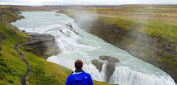

Голубая лагуна — геотермальный бассейн, известный во всем мире. Более того, она действительно уникальна.
Лагуна цвета неба является самым настоящим символом северной страны и одним из любимейших скандинавских
курортов. Благодаря уникальному составу воды, бактерии в Голубой лагуне просто не выживают.
Хваль-фьорд в переводе с исландского означает «китовый фьорд». Он расположен у западных берегов Исландии между городами Мосфедльсбайр и Акранес и свое название получил из-за того, что здесь действительно водится много китов, которых периодически можно увидеть с берега.
Остров Видей — место уникальное, но малоизвестное даже тем туристам, что рискнули выбраться на промерзшие просторы этой древней и прекрасной как эльфийская сага страны. Оно и немудрено: красоты национальных парков, термальных гейзеров и водопадов затмевают на первый взгляд неприметный островок суши.
В старые времена считалось, что озеро Керид (Kerid) не имеет дна и связано с океаном подземным каналом. В 20 веке ученые облазили его дно вдоль и поперек, но тайного хода не нашли, зато увидели взаимосвязь глубины водоема и уровня грунтовых вод.
 По красивой легенде, в начале 20 века дочь арендатора земли, где находится водопад Гюдльфосс (Gullfoss), хотела броситься вниз со скалы в знак протеста против строительства на нем электростанции. Памятник смелой девушке стоит на вершине той самой скалы.